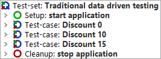
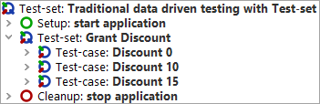
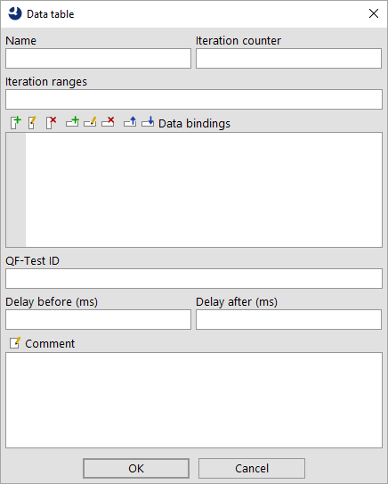
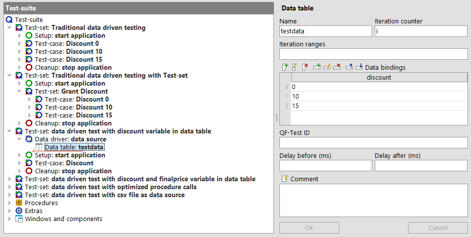
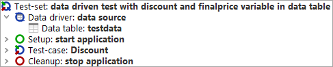
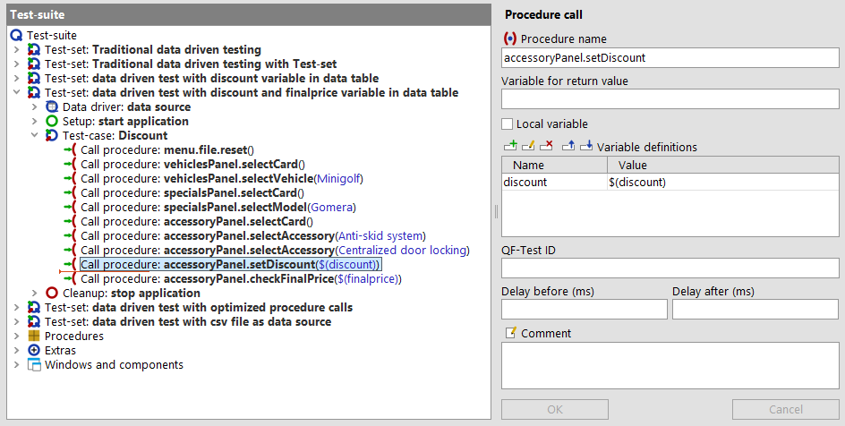
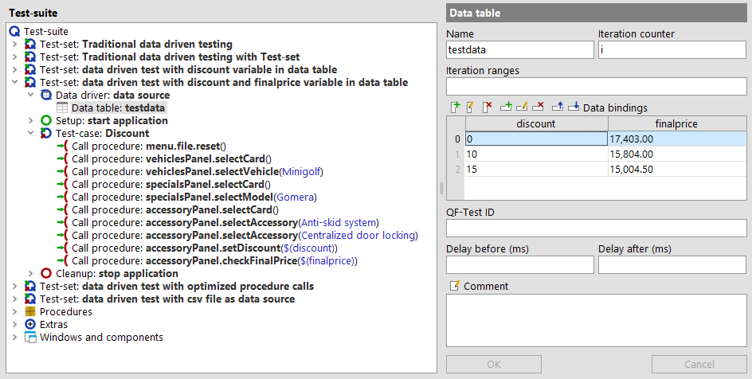
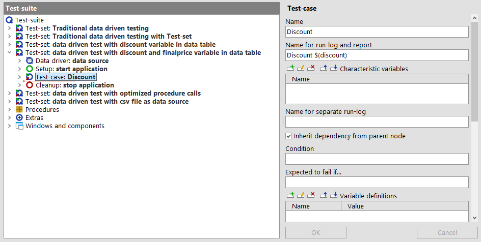
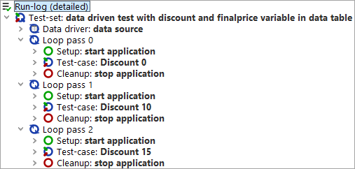

| Version 6.0.3 |
This chapter explains how data driven testing can be achieved using QF-Test.
You can find the implementation of the following examples in the demo test-suite qftest-6.0.3/doc/tutorial/advanced-demos/en/datadrivenTesting.qft.
The second provided test-suite
qftest-6.0.3/doc/tutorial/datadriver.qft
contains further samples like reading an Excel file or creating an iteration over test-cases.
Please take care to copy all test-suites to a project-related folder first and modify them there.
The users of the JCarConfigurator can grant several discount levels to their customers. Thus the test designers have figured out three discount levels which have to be tested.
Those discount levels are 0%, 10% and 15%.
As the workflow of granting discounts is the same for each discount level, we can use the same test-case for testing them. The only difference between the test-cases is the input of the actual discount level and the price to check. A major advantage of using the same test-case is that this avoids side effects caused by several implementations of a 'Test-case', which could have different bugs. Additionally we can reduce the implementation effort.
The logical test-case, i.e. the steps of the test, for granting a discount will look like this:
The following paragraphs demonstrate how to implement such a scenario.
The QF-Test definition of a 'Test-case' node says that a 'Test-case' is a workflow together with a specific set of test data. If you have two sets of test data, you have to use two different 'Test-case' nodes. Those nodes can be organized within a 'Test-set' node.
So the conventional way to solve the issue is to implement one 'Test-case' per discount level, like depicted below:
|
|  | ||
|
| Figure 28.1: Traditional way of data driven testing | ||
Those three nodes are grouped within a 'Test-set' node. The 'Test-set' node also contains the 'Setup' and the 'Cleanup' sequences, which will launch the SUT before each 'Test-case' and will stop the SUT after it. This is to ensure that each test-case has the same pre-conditions. If you do not want to re-start the SUT between the single test runs, you could add a new 'Test-set' to the 'Test-set' 'Discount levels' and move the three 'Test-case' nodes into that 'Test-set' like this:
|
|  | ||
|
| Figure 28.2: Traditional way with a nested 'Test-set' | ||
The chapter Dependencies: Automatically ensuring correct prerequisites for each 'Test-case' will show up a more elegant and more efficient way of organizing pre-requisites of test-cases.
As you can imagine this approach could be very exhausting with regards to maintaining test-data, especially if we have to add or remove discount levels. Another disadvantage is that we keep the test-data within QF-Test.
The next section Data driver concept demonstrates how to organize the test-suite to implement the 'Test-case' only once and to keep the test-data separated from the test-case.
If we want to run one test-case using different test data sets, we have to define the test data in a data source first. The data source has to be part of a 'Data driver' node. QF-Test offers built-in data source nodes for database tables, CSV files, Excel files and QF-Test data tables. A QF-Test data table will store the data in the test-suite itself. This is what we will use for the following example. You can use any other type of data sources, e.g. XML files, too, by implementing your own script for reading the data.
Insert a 'Test-set' to the test-suite first. You can choose whatever name you want.
A 'Data driver' node can be inserted into a 'Test-set' via right mouse click and then selecting »Insert node«-»Data drivers«-»Data driver«. You have just to specify a name for this node. The actual data source will then be inserted as child node to that 'Data driver' node. For our example we insert a 'Data table' via a right mouse click at the opened 'Data driver' node and select »Insert node«-»Data drivers«-»Data table«. Now we should detect this dialog:
|
|  | ||
|
| Figure 28.3: Data table dialog | ||
First we have to specify a name for this data source. We should also define a name for the 'Iteration counter' variable. The iteration counter contains the index of the currently executed test data in the test run
The next step is to define the test data. Therefore click on the 'Insert column' button, which is the first button of the 'Data bindings' section. Then you have to define a name for the column, let us set it to 'discount'. After pressing 'OK' you will see that the column has been inserted in the 'Data bindings' area. This column heading will stand for the variable name in the tests later.
Now you can use the 'Insert row' button to insert a new row. Each row will stand for one test data set, i.e. you have to insert three rows by now, where the first row contains 0%, the second 10% and the third 15%.
The table should look like this:
|
|  | ||
|
| Figure 28.4: The filled data table | ||
The next part is the implementation of the test-case. Therefore we just insert one 'Test-case' node to the 'Test-set'.
Note If you want to insert a 'Test-case' to a 'Test-set' which already contains a 'Data driver' node, you have to select the closed 'Data driver' node to insert it.
The 'Test-case' will contain the procedure calls for the required test steps. The 'Setup' and 'Cleanup' nodes of the previous example can also be copied to the 'Test-set'. The whole 'Test-set' will look like this now:
|
|  | ||
|
| Figure 28.5: 'Test-set' with 'Data driver' | ||
The following step is to make use of the variable 'discount' which has been defined at the 'Data table' node before. We will add that variable as parameter to the 'setDiscount' procedure call. Once we have done this, we have following result:
|
|  | ||
|
| Figure 28.6: Using the $(discount) parameter | ||
Now we are ready to launch the 'Test-set'.
After running the tests we should get at least two errors. Those errors come from the different values of the 'Final price' text-field, but our test always verifies the same value. In our case we should also put the expected values for the 'Final price' fields to our test data via adding a second column to the 'Data table' node.
|
|  | ||
|
| Figure 28.7: Full data table | ||
Another drawback is, that we see the same test-case name in the HTML overview report and in the run-logs for each test run. To avoid this we can edit the 'Name for reports and run-logs' attribute of the 'Test-case' node. In that attribute we have to make use of at least one of the test-case specific data, i.e. in our case 'discount'. So let us set that attribute to 'Discount $(discount)'.
|
|  | ||
|
| Figure 28.8: Name for run-log and report attribute | ||
If we re-run the tests now, we should get no error anymore and the run-log as well as the HTML report contain three different test-case names. Here you can see the created run-log file:
|
|  | ||
|
| Figure 28.9: Run-log with different names per 'Test-case' | ||
If you want to run one 'Test-case' only without the whole 'Test-set' and its 'Data driver', it is recommended to set default values for the variables as global ones at 'Test-suite'.
Note If the name of the variable in the 'Data driver' is
the same like the name of the procedure, you can also skip the variable
definition of the 'Procedure call'. This can be done because the variable of
the 'Data driver' will be put at QF-Test's variable stack and so any step
within the 'Test-case' can access that variable. You can see this behavior in
the demo test-suite
qftest-6.0.3/doc/tutorial/advanced-demos/en/datadrivenTesting.qft
in the 'Test-set' "data driven tests with optimized
procedure calls".
In the demo test-suite
qftest-6.0.3/doc/tutorial/advanced-demos/en/datadrivenTesting.qft
you can also find an additional 'Test-set' using a CSV file as data source.
The 'Data driver' concept of QF-Test allows the user to create logical test-cases and to keep the test data separated from the test flow itself.
It is even possible to use nested 'Data driver' nodes in a 'Test-case'. This can be achieved by creating a 'Test-step' in a 'Test-case'. This 'Test-step' can contain the nested 'Data driver'.
You can find a more detailed explanation about data driven testing within QF-Test in the manual in the chapter Data-driven testing.
The second provided test-suite
qftest-6.0.3/doc/tutorial/datadriver.qft
contains further samples like reading an Excel file or creating an iteration over test-cases.
| Last update: 9/6/2022 Copyright © 2002-2022 Quality First Software GmbH |